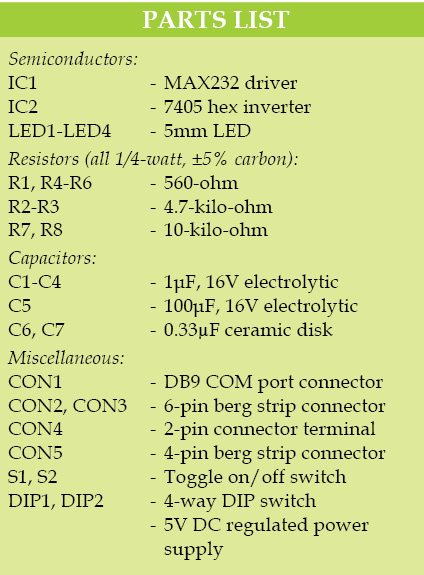
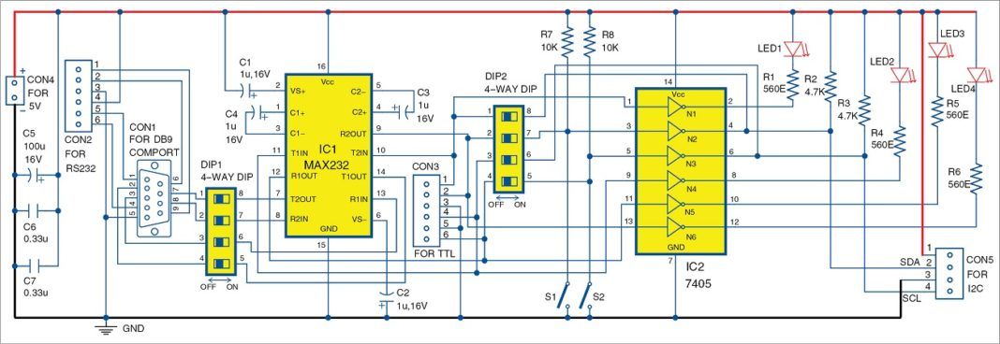
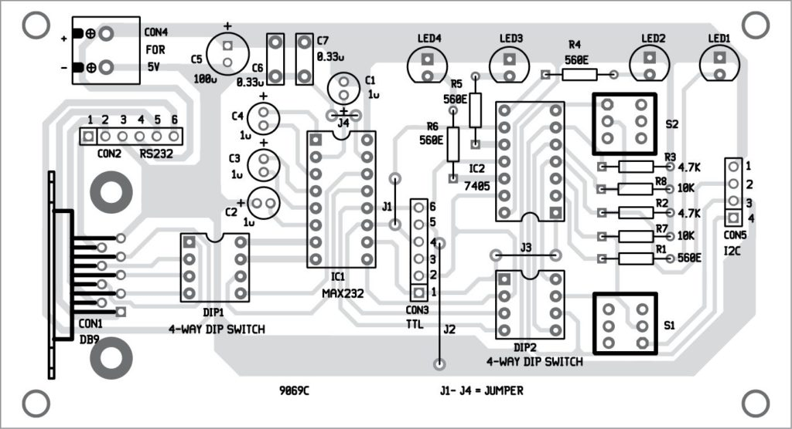
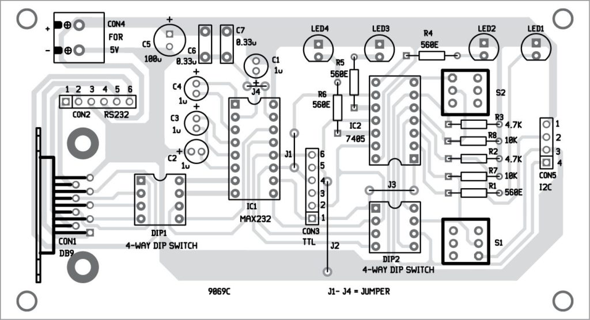

Electronics Projects: Configurable RS232 To TTL To I2C Adaptor
RS232 signals cover a much longer distance than standard TTL and I2C signals. Also, RS232 signals have better noise immunity. RS232 is a well-known standard supported by many popular integrated circuits (ICs) and therefore is still widely used. Sometimes we want to send TTL and I2C signals over a longer distance. This article describes how these signals can be extended through RS232 lines. Let us construct configurable RS232 to TTL to I2C adaptor
Circuit and working
Fig. 1 shows the circuit of configurable RS232 to TTL to I2C adaptor. RS232 signals are available on the standard 9-pin connector, also known as DB9 connector (CON1). There is a wide variety of configurations available for RS232 signals on different peripherals. So we have provided CON2 and a 4-way or 8-pin DIP switch (DIP1) for various configurations. CON2 is a single-line connector from which RS232 signals can be taken for interfacing external circuits.
PIN diode based fire sensor
MAX232 (IC1) is a dual driver/receiver that includes a capacitive voltage generator to supply TIA/EIA-232-F
voltage levels from a single 5V supply. It has two receivers and two transmitters compatible with RS232
signals.
TTL equivalent signals from the interface are available at CON3. These signals drive LED1 through LED4
through gates N1, N4, N5 and N6 of hex inverter 7405 (IC2) for visual indications. The 7405 should be with
low input current and capable of driving the LEDs.
Switches S1 and S2 are used to manually check the signals on LED1 and LED2 when DIP2 pins 1 and 8 and pins 3
and 6 are shorted. DIP2 is used to provide different configurations for TTL to I2C converter built around
inverters N2 and N3 of IC2. I2C signals are available on CON5.
Vs+ and Vs– at pins 2 and 6 respectively of IC1 are the two test points where the voltage levels obtained
should be around 9V. These voltages are produced internally by MAX232 and should be within specified limits
as stated in the data sheet.
The circuit requires a 5V DC regulated power supply and below 100mA of current to operate. You may use a
small transformer providing around 10V/100mA and a 7805 regulator for the power supply. Regulator IC should
be mounted on a heat-sink having thermal resistance below 30oC/W.
Construction and testing
An actual-size, single-side PCB pattern of configurable RS232 to TTL to I2C adaptor circuit is shown in Fig. 2 and its component layout in Fig. 3. After mounting all components on the PCB, check proper connections again in the circuit. Connect the 5V DC power supply source to CON4 to power on the circuit.
 
